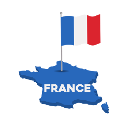
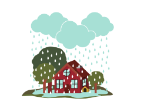
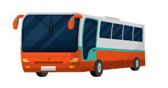
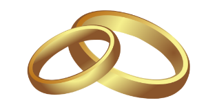

As we make plans and arrangements, we can use different future forms such as going to or the present continuous. We use the present simple for scheduled activities.
For example,
Hannah is going to start her yoga class next week.
The train leaves in 10 minutes.
Uses of the Future Form
Accordion

1. It can be used for plans.
“Dainne is going to France.”
2. It can be used for future predictions based on physical evidence.
“She looks mad. She might be going to take some air outside.”

2. It can be used for scheduled events.
“When will the bus leave?”

3. It can be used for promises
“Will you marry me?”

Use the future continuous to speak about what will be happening at a specific time in the future.
Example:
Jane will be having a good night.
Other Future Forms Due to + infinitive
Accordion
We use about to + infinitive for the close future.
Example:
I can’t go to the cafeteria. My English class is about to start.
If you are expecting or owed something, you can use this due to + infinitive.
Example:
The papers are due to check any minute from now.
If you are expecting or owed something, you can use this due to + infinitive.
Example:
The speaker is to discuss about awareness tomorrow during the seminar.
| Participate in the Discussion Forum: Give an example using each of the other future forms: |